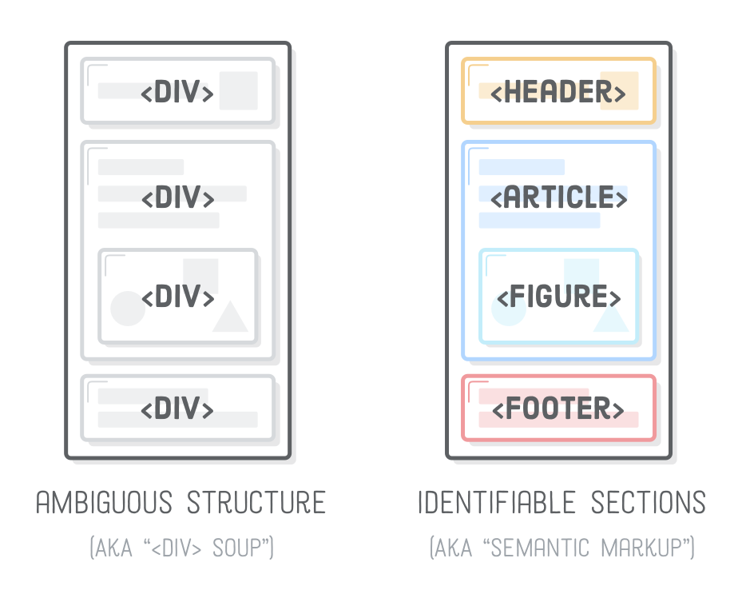
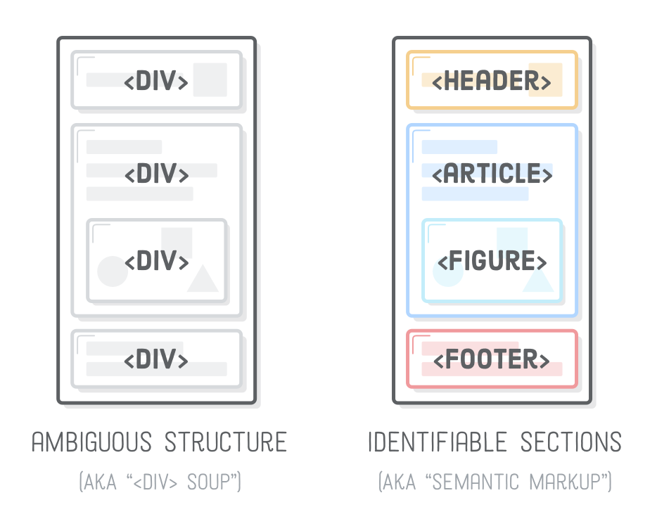

Failų kelių nurodymai

Nurodant aplankalo vardą - nueinama į nurodytą aplankalą.
Norint atlikti sekantį veiksmą - reikia parašyti " / ".

Norint žengti žingsnį atgal iš aplankalo - reikia parašyti " .. ".
Puslapio struktūra
- header - puslapio viršus, kuriame nurodoma informacija apie puslapį / menu
- nav - skirtas kuri puslapio menu
- section - didžiulė puslapio dalis
- div - maža puslapio dalis
- main - pagrindinė puslapio dalis
- article - main viduje esanti sekcija
- aside - šoninė puslapio sekcija
- footer - puslapio apačia, kurioje yra įvairi informacija kaip: terms and uses; privacy policy; copyrights; links; partners...
 

Inline, Block ir Inline-Block
Inline
Inline elementai yra tokie elementai, kurie užima tik tiek vietos ekrane, kiek jiems yra reikalinga. Minusas tas, kad negalima keisti šių elementų dydžių. Pliusas tas, kad jie labai lengvai įtalpinami tarp kitų informacijos vienetų.
Tag'ų pavyzdžiai: a, span, img, input, button, label, select, textarea, cite...
Block
Block elementai yra tokie elementai, kurie užima visą leistiną plotį ir neįsileidžia kitų elementų į tą pačią eilutę. Minusas tas, kad užima visą leistiną plotį. Pliusas tas, kad galima keisti jų dydį.
Tag'ų pavyzdžiai: h1-h6, p, div, section, main, article, nav, ol, ul, li, blockquote, aside, canvas, table...
Inline-Block
Inline-Block elementai yra tokie elementai, kurie pasisavino geriausias Blokinių ir Linijinių elementų savybes. Jie užima tik tiek vietos kiek jiems reikia, bet jų dydį vis viena galima keisti.
Model Box
Margin - Atstumas nuo elemento rėmelio iki aplinkinių elementų rėmelio (skirtingų elementai margin'ai persidengia ties viršum/apačią, ties šonais - NE).
Border - Rėmelis, kuris yra tarp Margin ir Padding.
Padding - Atstumas nuo elemento content(turino) iki elemento rėmelio.
Content - Elemento turinys. (blokinio elemento turinys užims visą leidžiamą eilutę arba nurodytą dydį)

Galime aprašyti Margin, Border ir Padding nustatymus 4 skirtingais būdais.
Vienas matmuo visom 4 kraštinėm (margin: 50px)
Rašant dvejus matmenis - pirmasis priskiriamas viršuj ir apačiai, antrasis priskiriamas šonams (margin: 20px 50px)
Rašant tris matmenis - pirmasis priskiriamas viršuj, antrasis priskiriamas šonams, trečiasis priskiriamas apačiai. (padding: 30px 20px 10px)
Rašant keturis matmenis - jie priskiriami eilės tvarka, pagal laikrodžio rodyklės kryptį nuo viršutinio. (border-style: solid dashed dotted double)
Galima nurodyti kurią kraštinę nori stilizuoti. (border-right-color: orange)